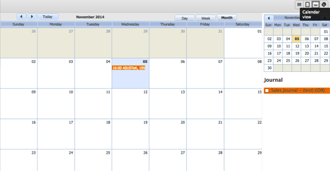
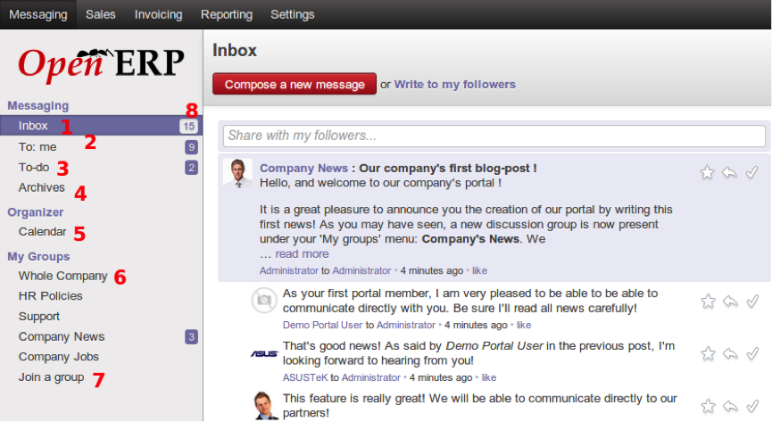

Login¶
Untuk mengakses sistem Odoo 8, dapat dilakukan dengan menggunakan Komputer maupun Smartphone asalkan terhubung dengan jaringan internet. Odoo bersifat web-base application, maka untuk mengaksesnya pengguna harus menggunakan web browser seperti Chrome, Safari, Mozilla dan Internet Explorer. Khusus untuk Internet Explorer, Odoo akan bekerja baik pada IE versi 10 keatas.
pada web browser ketik ip address atau domain Odoo Anda seperti dibawah ini
www.erp.company.com:8069 atau 192.168.1.10:8069
atau sesuai dengan settingan Sistem Administrator Anda
maka akan muncul tampilan sebagai berikut :

Masukan Masukan User Name dan Password
Tampilan¶
Tampilan Umum¶
Setelah user berhasil login ke dalam sistem, maka tampilan pertama kali yang akan muncul seperti gambar di bawah ini :

- Keterangan :
- Menu Utama, yang merupakan pembagian fungsi secara umum sesuai dengan kategori pekerjaan. Menu utama ini merupakan pintu masuk untuk melakukan kegiatan berikutnya.
- Search bar , yang merupakan area untuk melakukan pencarian sesuai yang relevan dengan fungsi dan akses dari seorang user.
- Pesan Umum, yang digunakan untuk mengirimkan pesan dan membaca pesan.
- Nama dan Foto, merupakan keterangan pengguna yang sedang login
- Sub Menu, merupakan turunan dari Menu Utama
- Working Area, tempat user bekerja dalam sistem.
Tampilan Form¶
Tampilan form digunakan untuk menampilkan data secara detail. seperti layaknya form pada kertas, tampilan ini digunakan untuk melakukan kegiatan dengan mengisi data-data yang diperlukan dalam 1 dokumen pekerjaan.

Tampilan List¶
Tampilan List (baris), digunakan untuk melihat keseluruhan data secara urutan. Pengguna bisa mengurutkan data sesuai dengan parameter yang diinginkan dengan mengklik parameter pada judul tampilan baris.
Tampilan Calendar¶
Calendar View, untuk menampilkan data dalam bentuk kalender
Tampilan Grafik¶
untuk menampilkan data dalam bentuk Grafik
Tampilan Kanban¶
untuk menampilkan data dalam bentuk Kanban

Tampilan Search¶
Selain mempunyai beberapa jenis view, Odoo 8 juga dilengkapi dengan fasilitas grouping dan filter yang terdapat pada search bar untuk mempermudah user dalam menganalisa data yang diinginkan.
- Filter. Fungsi Filter digunakan untuk menampilkan data yang diinginkan saja, sesuai dengan kategori yang dipilih.
- Group By. Fungsi Group By digunakan untuk menampilkan seluruh data namun dikelompokan berdasarkan kategori yang dipilih
- Custom Filter. Berfungsi sama dengan Filter, Custom Filter menampilkan data sesuai dengan kategori yang kita inginkan, sementara fungsi Filter pada point 1, kategorinya sudah ditentukan oleh sistem.
- Advance Search. Fitur ini berfungsi untuk melakukan pencarian data dengan beberapa kategori yang diinginkan.
Untuk melakukan filtering dan grouping dapat dilihat pada gambar berikut.

Messaging¶
Messaging adalah fitur baru di Odoo 8, yang bertujuan untuk menyimpan semua komunikasi bisnis dalam sistem ERP, dibandingkan eksternal seperti dalam klien email yang terpisah. Fitur ini memingkinkan pengguna untuk melakukan diskusi baik dalam internal perusahaan maupun dengan pihak lain seperti pelanggan dan mitra. Pesan juga berfungsi sebagai daftar to do , yang harus dikerjakan atau di follow up, berdasarkan pada arus komunikasi, dan kelompok diskusi, mailing list fungsionalitas untuk tim.
Gambar berikut ini menampilkan sub menu dari fungsi Messaging.
- Keterangan :
- Inbox. Inbox ini akan menampilkan semua komunikasi yang belum dibaca oleh pengguna. Pesan yang sudah ditandai sebagai done dan to do tidak ditampilkan di sini. Kotak ini harus selalu di simpan dalam keadaan kosong, yang menandakan bahwa pengguna telah membaca Pesan dan menandainya dengan done atau to do. Kotak masuk kosong merupakan kondisi ideal di mana tidak ada komunikasi bisnis yang tidak disadari oleh pengguna.
- To : Me. Semua pesan yang ditujukan langsung kepada pengguna akan muncul disini. Pesan di sini harus juga idealnya dibaca dan ditandai done atau to do, dan dibersihkan dari pandangan.
- To-Do. Semua pesan dari Inbox yang sudah ditandai dengan to do akan ditampilkan disini, sebagai daftar pekerjaan yang harus dilakukan oleh pengguna. Apabila daftar pekerjaan tersebut telah dilakukan, maka pengguna harus menandainya dengan done.
- Archives. Semua pesan yang sudah ditandai dengan done, akan disimpan sebagai arsip yang memungkinkan untuk penelusuran komunikasi bisnis sebelumnya.
- Calendar. Calendar ini akan menampilkan jadwal meeting baik untuk pengguna maupun untuk rekan kerja internal.
- Groups. Groups ialah kumpulan pesan secara kolaboratif. Apabila pengguna bergabung dalam kelompok, maka semua komunikasi untuk kelompok tersebut akan terlihat dan pengguna juga dapat mengirimkan pesan terhadap kelompok untuk dilihat oleh anggota kelompok lain. Fitur ini digunakan untuk melakukan diskusi atau memberikan pengumuman secara langsung kepada karyawan.
- Join Group. Tempat untuk bergabung dengan group dalam perusahaan atau membuat group baru, jika mempunyai hak akses. Setiap kali join di sebuah Group, maka akan muncul menu baru dibawah Groups.
- Unread Message. Merupakan jumlah pesan yang belum dibaca oleh pengguna.